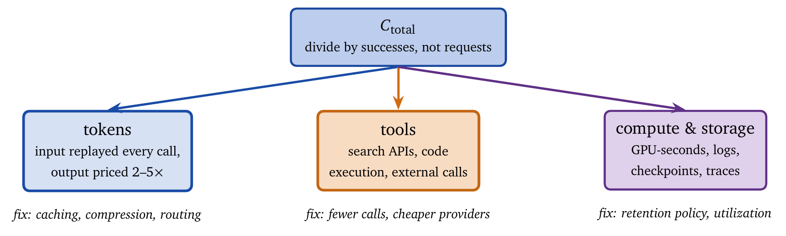
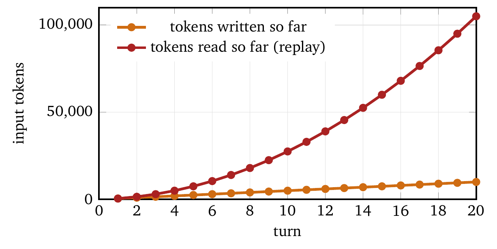
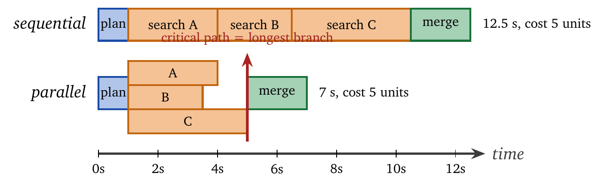
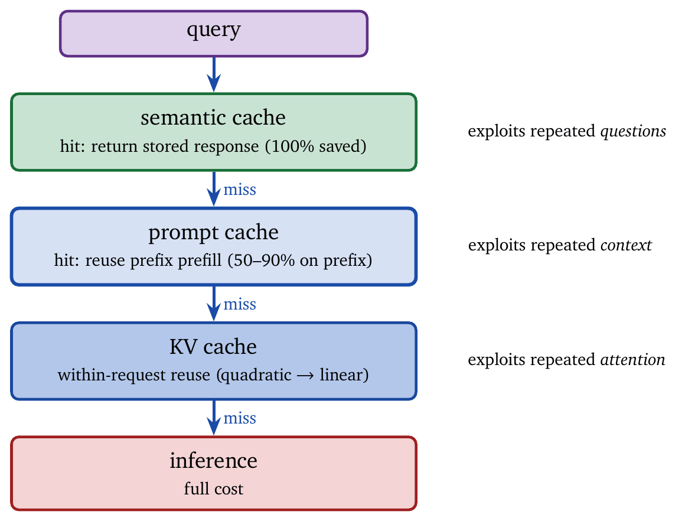
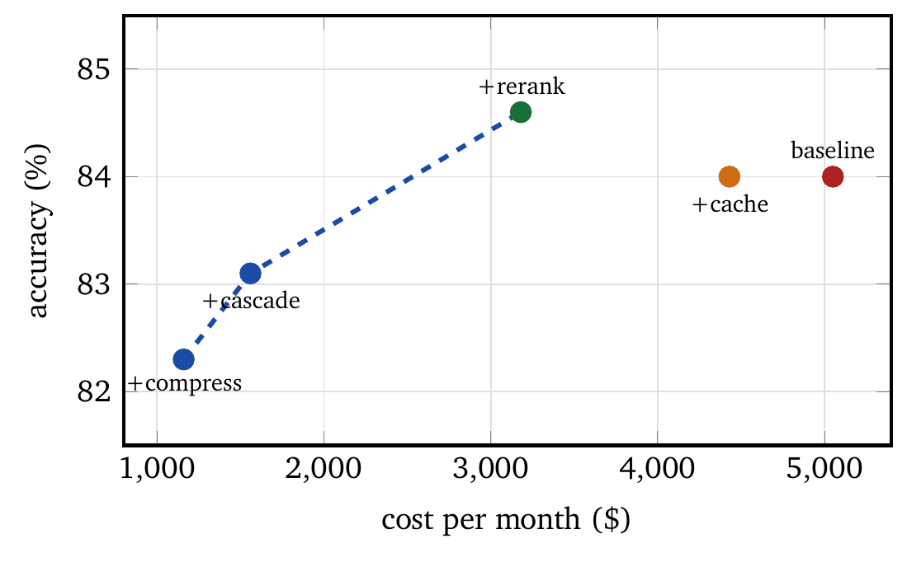

The first surprising invoice is a rite of passage. An agent that cost pennies in testing bills four figures in its first production week, and the postmortem reaches the same conclusion every time: nobody can say where the money went. The total is known; the feature, the user, and the step responsible are not.
That is a measurement failure before it is an efficiency failure, and this chapter treats the measurement first.
We begin with the token, work out how token usage compounds across prompts, retrieval, and multi-step execution, and decompose the total into components that respond to different fixes. We then turn to latency, which follows different rules: cost accumulates across everything the agent does, while latency accumulates only along the critical path. Confusing the two produces optimizations that make an agent cheaper and slower, or faster and ruinous.
One feature of this domain has no analogue in ordinary capacity planning. The resource becomes dramatically cheaper while it is being planned for. The price of a fixed level of capability has fallen roughly \(1{,}000\times\) over three years [5]. Every cost model here is therefore indexed by time, and every optimization has to justify itself against the alternative of waiting six months and paying less for the same thing. Some optimizations do not survive that test, and this chapter identifies which.
Consider a concrete budgeting problem. You have $1.00 to answer a single question. The language model charges $2.50 per million input tokens and $10.00 per million output tokens. The system prompt is 500 tokens and the user’s question is 50 tokens. You intend to retrieve documents to help the model, and each retrieved document averages 800 tokens. The model’s response will be about 300 tokens.
How many documents can you retrieve before exceeding the budget?
The arithmetic is simple, and working through it exposes the structure of token cost. Input tokens and output tokens are priced differently. Input tokens accumulate across system prompt, user message, retrieved context, and conversation history. Output length is partly under the designer’s control. Every design decision has a cost consequence.
The fixed input cost is the system prompt plus the question, 550 tokens. The output is fixed at 300 tokens. The variable cost is the retrieval, at 800 input tokens per document. With \(d\) documents the total input is \(550 + 800d\) tokens, and the cost is \[\text{Cost} = \frac{550 + 800d}{1{,}000{,}000} \times 2.50 + \frac{300}{1{,}000{,}000} \times 10.00 = 0.004375 + 0.002d.\] The budget constraint \(0.004375 + 0.002d \leq 1.00\) gives \(d \leq 497\).
The budget permits 497 documents, and retrieving them would be a mistake. Long contexts degrade retrieval accuracy in position-dependent ways, add latency proportional to their length, and make it much harder to say which document an answer came from. The calculation gives the capacity of the budget and says nothing about the quality of spending it. Nearly every question in this chapter has this shape: affordability and effectiveness are separate axes, and the interesting designs sit where the two disagree.
Language model APIs price computation in tokens. A token corresponds to roughly four characters of English text, or about three-quarters of a word; the sentence “The quick brown fox jumps over the lazy dog” contains nine words and about eleven tokens.
Pricing distinguishes input tokens, which are sent to the model, from output tokens, which the model generates. Output tokens typically cost two to four times as much as input tokens, and the asymmetry reflects the computation: input can be processed in parallel during the prefill phase, while output is generated one token at a time.
Representative prices from late 2025 appear below. The absolute numbers are a snapshot that is already drifting; the spread between rows is the durable part, and it is the part the arguments in this book rely on.
| Model | Input ($/M) | Output ($/M) | Context |
|---|---|---|---|
| GPT-4o | $2.50 | $10.00 | 128K |
| GPT-4o-mini | $0.15 | $0.60 | 128K |
| Claude Sonnet 4 | $3.00 | $15.00 | 200K |
| Claude Haiku 4 | $0.80 | $4.00 | 200K |
| Gemini 1.5 Pro | $1.25 | $5.00 | 1M |
| Gemini Flash-Lite | $0.075 | $0.30 | 128K |
| Llama 4 Scout (Groq) | $0.11 | $0.34 | 128K |
| DeepSeek-V3 | $0.27 | $1.10 | 128K |
The spread in input price across these rows exceeds \(30\times\), and every row is a plausible choice for the same task. Choosing a model is therefore a cost decision of the same magnitude as choosing whether to do the work at all, which is why Chapter 7 treats model selection as an action the policy takes rather than as a configuration constant.
One cost appears in no pricing table: the encoding of the messages themselves. Tool schemas and tool results are structured data, and JSON, the default encoding, was designed for machine interchange rather than token thrift. A controlled comparison of token-optimized formats across agentic workloads found meaningful reductions in the tokens spent purely on syntax, traffic that carries no information [12]. For an agent whose context consists mostly of tool schemas and tool output, this is a saving that requires no change to the policy.
A central economic property of language models is rapid cost deflation. For a fixed level of capability, measured by benchmarks such as MMLU, inference costs have fallen by roughly an order of magnitude per year [5, 4]. When GPT-3 became publicly accessible in 2021, it achieved an MMLU score of about 42 at $60 per million tokens. By 2024 equivalent performance cost about $0.06 per million tokens. Higher capability tiers have seen similar declines, with reductions of \(60\times\) or more over 18-month periods.
The deflation arises from several independent factors. Each generation of accelerators delivers more compute per dollar. Inference precision has dropped from 16 bits to 8 and now to 4 for many workloads, reducing memory bandwidth and increasing throughput with little loss of quality. Software techniques such as continuous batching, Flash Attention, speculative decoding, and PagedAttention improve the utilization of existing hardware. Models trained on larger and more diverse corpora reach the same performance with fewer parameters, so that a billion-parameter model in 2025 often exceeds a 175-billion-parameter model from 2022. And open models with multiple hosting providers compress margins across the ecosystem.
For agent design the implications are practical. Cost models must be indexed by time rather than treated as static. Complex optimization infrastructure may have diminishing returns. Applications that were uneconomical can become viable quickly. And a system should be designed so that a cheaper model can be substituted without architectural change.
Agent cost decomposes into components with distinct behaviors and distinct optimizations, shown in Figure 5.1.

Token costs dominate most agent workloads: \[C_{\text{tokens}} = \sum_{i=1}^{n} \left( T_{\text{in}}^{(i)} p_{\text{in}} + T_{\text{out}}^{(i)} p_{\text{out}} \right),\] where \(n\) is the number of model calls and \(p_{\text{in}}\), \(p_{\text{out}}\) are the per-token prices.
In a multi-turn interaction, the input to each call includes the whole history so far: \[T_{\text{in}}^{(i)} = T_{\text{system}} + \sum_{j=1}^{i-1} \left( T_{\text{user}}^{(j)} + T_{\text{assistant}}^{(j)} \right) + T_{\text{user}}^{(i)}.\] This replay makes total token usage grow quadratically in the number of turns. A 20-turn conversation with 500 tokens per turn produces about 100,000 input tokens across all calls, although only 10,000 tokens were ever written. Figure 5.2 shows the growth.

Tool invocations incur their own costs, \(C_{\text{tools}} = \sum_{j=1}^{m} c_{\text{tool}}^{(j)}\), and these vary widely. Web search APIs may charge cents per query. Database queries are often negligible. Code execution costs depend on runtime. External APIs can dominate the total if they are invoked frequently.
For self-hosted models, \(C_{\text{compute}} = T_{\text{GPU}} \cdot p_{\text{GPU}}\). Self-hosting becomes economical only above some volume threshold, and the threshold is workload-specific. It depends on utilization, on the hardware one can keep busy, and on the engineering time the deployment consumes. Published total-cost-of-ownership analyses work the comparison in full for particular settings [18]; the general lesson is that below the crossover, managed APIs usually win once operational overhead is counted, and that most teams estimate their own utilization optimistically.
The total aggregates the components, \(C_{\text{total}} = C_{\text{tokens}} + C_{\text{tools}} + C_{\text{compute}}\). A more informative quantity is the unit cost, \[C_{\text{unit}} = \frac{C_{\text{total}}}{N_{\text{success}}},\] the cost per successful outcome. Unit cost captures both efficiency and effectiveness: a system that fails frequently may appear cheap per request and be expensive per success.
Cost alone does not determine usability. Latency determines whether users tolerate an agent, and latency obeys different arithmetic.
Total latency decomposes as \(T_{\text{total}} = T_{\text{queue}} + T_{\text{critical}}\), where the queue term covers waiting for capacity and the critical term covers the longest dependent chain of work. For a single model call, \[T_{\text{LLM}} = T_{\text{TTFT}} + n_{\text{out}} \cdot T_{\text{per-token}},\] where \(T_{\text{TTFT}}\) is the time to the first token, which includes reading the prompt, and the second term is the generation time.
In a \(k\)-step ReAct agent, the steps are sequential and the critical path is their sum: \[T_{\text{critical}} = \sum_{i=1}^{k} \left( T_{\text{LLM}}^{(i)} + T_{\text{tool}}^{(i)} \right).\] Sequential dependencies dominate latency. Parallelization shortens the critical path and may increase total cost, since more work runs in total.
Multi-agent systems trade coordination overhead for parallelism. When \(k\) agents run concurrently and an aggregator combines their results, \[T_{\text{parallel}} = \max_i T_{\text{agent}_i} + T_{\text{aggregation}},\] while the cost is the sum over all agents. Figure 5.3 illustrates the difference. The Anthropic research system [2] exploits this structure to reduce latency on complex queries.

Some optimizations improve both latency and cost; caching is the chief example. Others trade one for the other: batching lowers cost and raises latency for the earliest request in the batch, while speculation lowers latency and raises cost. Production systems typically optimize the 95th-percentile latency rather than the mean, because the tail is what users notice.
Caching is the one optimization that improves cost and latency at the same time. Everything else in this chapter trades one against the other. That makes caching the first thing to reach for and, because it introduces staleness and correctness questions, the thing most likely to be reached for carelessly.
Four layers of reuse exist in an agent stack, and they exploit different redundancies. Understanding which redundancy each captures tells you which layers will actually fire on your traffic.
During generation, every new token attends to every previous token. Recomputing the key and value projections of the earlier tokens at each step would make generation quadratic in the sequence length. The KV cache stores them, reducing generation to linear time at the cost of memory that grows with the context length.
For agents this shifts the binding constraint. Compute stops being the limit and memory bandwidth becomes it, because the cache for a long-context agent can exceed the model weights themselves. PagedAttention [7] manages the cache in fixed-size blocks, as an operating system manages pages, which raises the achievable batch size substantially.
Agentic workloads stress this differently from chat. They run long contexts, multi-turn structure, and repeated tool-call formatting, and a recent survey of system-aware KV optimization catalogs the techniques that follow from those properties [11]. Quantization aimed specifically at agentic inference pushes cache precision lower than chat workloads tolerate, exploiting the fact that much of an agent’s context is structured, repetitive tool traffic rather than prose [15].
One consequence deserves mention here because it reappears in Chapter 8. The KV cache is state. It survives operations the application regards as cleanup, and an agent that abandons a reasoning branch does not thereby remove the branch from the cache [8]. Caching is a performance mechanism with correctness consequences.
Prompt caching reuses the prefill computation for a prefix shared across requests. An agent with a 3,000-token system prompt and a stable tool schema pays for that prefix on every call; caching it means paying full price once and a reduced rate thereafter.
Providers price this in a characteristic shape. A cache write costs somewhat more than an uncached token, a cache read costs dramatically less, and the cache expires after a short idle period. Savings on cached tokens typically fall in the 50–90% range.
The pricing dictates the prompt layout. Everything stable goes at the front: system instructions, tool definitions, few-shot examples. Everything variable goes at the back. A single user-specific token near the beginning invalidates the entire suffix, so the common mistake of interpolating a user identifier or a timestamp into the system prompt can eliminate the cache benefit while appearing to do nothing.
Let \(f\) be the fraction of tokens in the cacheable prefix, \(h\) the hit rate, \(r\) the read multiplier, and \(w\) the write multiplier. The relative cost is \[\frac{C_{\text{cached}}}{C_{\text{base}}} = (1-f) + f\big[h \cdot r + (1-h)\cdot w\big].\] With \(r = 0.1\), \(w = 1.25\), \(f = 0.8\), and \(h = 0.9\), this is about \(0.30\), a 70% reduction. Setting the bracket equal to 1 gives the break-even hit rate, \[h^{*} = \frac{w-1}{w-r},\] which for these constants is about \(0.22\). Below a 22% hit rate, caching costs more than it saves. The threshold is low enough that caching is almost always correct and high enough that a badly ordered prompt can lose money.
Semantic caching goes further. It embeds the incoming query, searches for a previously answered query within some similarity threshold, and returns the stored response. A hit skips inference entirely, so the saving is total rather than partial.
Caching designed for chatbots transfers poorly to agents, because an agent’s output depends on external data and environmental context that a query embedding does not capture. Caching at the level of the agent’s plan rather than its response addresses this more directly [19].
The threshold is the entire design. Set it loose and the cache answers “what is our refund policy for enterprise customers” with the response to “what is our refund policy,” a correctness failure that looks like a latency improvement. Set it tight and the hit rate collapses. Unlike the lower layers, a semantic cache can return a wrong answer, so it belongs behind the same kind of gate as any other action that commits to a result, and it should be scoped by tenant and by permission. A cache shared across users is an access-control boundary that nobody reviewed.
Semantic caching suits high-volume, low-variance traffic such as support FAQs, documentation lookup, and repeated internal queries. It suits open-ended research poorly, because the premise of a research agent is that the question has not been asked before.
The threshold problem has a sharper statement. Treat a semantic cache key as a fuzzy hash and a tension becomes formal. Cache hit rates require locality: nearby inputs map to nearby keys. Collision resistance requires the opposite, the avalanche property, under which a small input change produces a large key change. A semantic cache cannot have both, and the trade is inherent rather than an artifact of any particular embedding [21].
The security consequence is a key-collision attack. An adversary who can shape queries can engineer a collision and cause the cache to serve one user’s response to another, a confidentiality failure in the costume of a performance optimization.
Two design rules follow. Scope semantic caches by tenant and permission, so that a collision cannot cross a trust boundary. And treat a cache hit as a proposal that passes a gate rather than as an answer, exactly as Chapter 9 treats any other action with a nonzero error rate.
Production systems layer all of these, cheapest check first, as Figure 5.4 shows.

Multi-agent systems complicate this picture. When several agents share a large context, naive cache reuse across candidates can change results rather than merely accelerate them, since the interaction between candidates carries information that reuse discards [17]. Measure quality as well as hit rate.
One assumption runs beneath all of the above, and it is false on shared infrastructure. GPU schedulers treat each model call as an independent request. An agent executing a hundred chained calls therefore has its intermediate state discarded between steps, so the KV cache built during step 7 is gone by step 8 and is rebuilt from scratch. Measured end to end, this request-level abstraction inflates agent latency by a reported factor of three to eight [22].
The fix makes the workflow rather than the call the schedulable unit. Capturing the agent’s execution graph lets the scheduler predict which KV state will be reused across tool-call boundaries and keep it resident. This is program-level scheduling, and it recovers latency that no prompt-side optimization can reach, because the loss occurs below the API.
Related work treats agent networks as a queueing-control problem in which contextual memory state, including prefix blocks and verified tool outputs, alters service rates rather than sitting passively as a cache [20]. The framing matters for capacity planning: an agent fleet’s throughput depends on state locality, so scheduling decisions and cache decisions are the same decision. For a self-hosted deployment this is actionable now. For a hosted provider it explains a gap between measured latency and the vendor’s published per-call numbers.
With measurement in place, the interventions below are roughly ordered by return on effort. The multipliers compose, which is why a system that applies four of them lands an order of magnitude below the naive implementation.
Cascading. Attempt the task with a small model and escalate on low confidence. Chapter 7 derives the escalation threshold; the summary is that cascading exploits the fact that most queries are easy and pricing is steeply tiered. BudgetMLAgent reports a 94% cost reduction through multi-model orchestration on its workload [3]. The complication, developed in Chapter 7, is that the escalation decision needs calibrated confidence, and most deployed routers lack it [16].
Context management. Input tokens dominate multi-turn agents because history is replayed on every call. Trajectory compression cuts what is replayed [1]; observation masking drops the bulky middles of tool outputs that the model never referenced. Chapter 10 covers the mechanics and the failure modes, of which there are more than the cost literature suggests.
Output control. Output tokens cost several times input tokens, and output length is one of the few quantities fully under the designer’s control. Requesting structured output instead of prose, capping reasoning length by task difficulty, and forbidding restatement of the question are unglamorous and reliably effective.
Early stopping. Agents routinely continue past the point of diminishing return, taking steps that do not change the answer. The gain comes from deciding when to stop rather than from adding capability [9], and Chapter 6 makes stopping a policy decision with an explicit criterion.
Batching. Batching amortizes fixed overhead across requests at the cost of latency for the earliest arrival. It is correct for offline and background work and usually wrong for interactive paths.
Encoding. Switching tool-call payloads away from verbose JSON reduces the tokens spent on syntax [12]. The saving is a small percentage, carries no risk, and applies to every call.
Topology. In multi-agent systems the communication graph is itself a cost variable. Choosing backbone models per role and then optimizing the topology under a budget [14], or routing dynamically on observed progress [13], addresses a cost that single-agent thinking cannot see.
An unattributed total cannot be acted on. If all that is known is that last month cost $40,000, every optimization proposal is a guess. Attribution converts the number into a decision.
Instrument along four dimensions, all of which should be available on every trace event described in Chapter 14:
| Dimension | Question it answers | Typical finding |
|---|---|---|
| Component | Which step spends? | One tool dominates |
| Task type | Which workload spends? | A rare task type dominates |
| User / tenant | Who spends? | A small percentile dominates |
| Outcome | Was it spent well? | Failures cost more than successes |
The outcome dimension is the one teams skip and the one that pays. Cost per successful task is the metric that matters, and it behaves differently from cost per request: \[C_{\text{unit}} = \frac{C_{\text{total}}}{N_{\text{success}}} = \frac{\bar{c}_{\text{req}}}{p_{\text{success}}}.\] A system with an 80% success rate pays a \(1.25\times\) multiplier on every request; at 50% it pays \(2\times\). Reliability is therefore a cost optimization, and frequently a larger one than any efficiency measure, because failed runs consume full price and produce nothing. Failures also skew expensive: a run that fails at step 12 has paid for 12 steps.
Two costs are routinely omitted from dashboards. Retries are attributed to the successful attempt, if they are attributed at all. And storage accrues silently: agent runs leave behind logs, context snapshots, checkpoints, and debug traces that persist, a footprint that benchmarks and cost models have largely ignored [10]. For a fleet of long-running agents this is a real line item.
A research agent answers analyst questions over an internal corpus and handles 50,000 queries per month. The naive implementation routes everything to a frontier model, retrieves ten documents per query, and replays the full history across an average of four turns.
Baseline. Per query: a 1,500-token system prompt, ten documents at 800 tokens each, 200 tokens of question, and roughly 600 tokens of output per turn, with history replayed each turn.
| Component | Tokens/query | $/query | $/month |
|---|---|---|---|
| System prompt (replayed \(4\times\)) | 6,000 | 0.015 | 750 |
| Retrieved documents (\(10\times800\), replayed) | 20,000 | 0.050 | 2,500 |
| History accumulation | 4,800 | 0.012 | 600 |
| Output (\(4 \times 600\)) | 2,400 | 0.024 | 1,200 |
| Total | 33,200 | 0.101 | 5,050 |
We now apply four interventions in sequence, measuring each against a held-out accuracy set rather than assuming it is free.
| # | Intervention | $/month | Accuracy |
|---|---|---|---|
| 0 | Baseline | 5,050 | 84.0% |
| 1 | Prompt-cache the stable prefix (\(h=0.9\)) | 4,430 | 84.0% |
| 2 | Retrieve 4 documents with reranking instead of 10 | 3,180 | 84.6% |
| 3 | Cascade: small model first, escalate 25% | 1,560 | 83.1% |
| 4 | Compress history; cap output at 400 tokens | 1,160 | 82.3% |
The total reduction is 77%, at a cost of 1.7 accuracy points. The middle rows carry the lesson. Step 1 is free: identical outputs, lower bill. Step 2 improved accuracy while cutting cost by a third, because retrieving ten documents had been introducing distractors, so the cheaper configuration was also the better one. Steps 3 and 4 are genuine trades that spend accuracy for money.
The frontier, then, is not a smooth curve one slides along. It contains free moves, strictly better moves, and real trades, and they have to be identified separately. A team that treats all four as “cost optimization” will negotiate about the 1.7-point drop without noticing that the first two steps cost nothing.
Whether the last two steps are acceptable depends on what a wrong answer costs. For exploratory analyst queries where the user sees the citations and can check them, 82.3% at $1,160 is an easy decision. For a system whose output feeds an automated decision, the 1.7 points may be worth $400 a month several times over, and Chapter 9 gives the machinery for deciding rather than guessing.
Plot every measured configuration with cost on one axis and quality on the other, as in Figure 5.5. Most points are dominated: some other configuration is both cheaper and better. The undominated points form the frontier, and the only interesting question is where on it to sit.

Two properties make this harder than a standard Pareto analysis. The frontier moves: inference prices fall by roughly an order of magnitude per year for a fixed capability level [5, 4], so a configuration that is unaffordable today is routine within a year, and a sufficiently complex optimization can be obsolete before it finishes paying for itself. One should ask how long an optimization takes to build, maintain, and validate, against the possibility of buying the same saving by waiting. This argues for a specific bias: prefer optimizations that are cheap to build and architectural rather than clever. A cache-friendly prompt layout keeps paying. A hand-tuned distillation pipeline for one model version does not, and it becomes a liability when that model is deprecated. Build for the ability to swap in a cheaper model without changing the architecture, and let deflation do the work that deflation does well.
The second property is that quality is not a scalar. The worked example collapsed it to one accuracy number, which hid the fact that step 2 improved grounding while step 3’s escalation errors clustered on exactly the hard queries that analysts cared about most. Chapter 15 takes this up in earnest.
Cost in an agent system is an accumulation problem, and accumulation is invisible until it is instrumented.
Token costs dominate, and multi-turn history replay makes them grow super-linearly in the number of turns. The total decomposes into tokens, tools, compute, and the storage that agent runs leave behind, and each component responds to a different fix. The honest denominator is successes rather than requests, since reliability is a cost lever and usually a larger one than efficiency.
Latency follows the critical path rather than the total, so parallel work is free in latency terms and never free in cost terms. Caching is the only intervention that improves both, and it comes in three layers that exploit three different redundancies. Every other intervention trades quality or latency for money; cascading, context management, output control, and early stopping all belong to that group, and their trades should be measured rather than assumed.
The whole frontier slides downward by about an order of magnitude a year. Optimizations that are architectural keep paying. Optimizations that are clever and version-specific are usually a slower way of buying what deflation would have provided.
Chapter 6 takes the next step and makes the budget a state variable that the policy can see and act on, rather than a limit it discovers by hitting.
Optimize first, measure later. Intuition about where an agent spends money is reliably wrong. The usual culprit is history replay, which is invisible in the code because nobody wrote a line that says “send the entire conversation again.”
Input tokens are the bill. Output costs several times input per token. A verbose response format can outweigh a large retrieved context.
Mean cost describes the system. Cost distributions across agent tasks are heavy-tailed. A 99th-percentile run that takes 40 steps instead of 4 can carry a substantial share of the monthly total, and the mean will not show it. Budget against the tail, and see Chapter 15 on why the mean is the wrong summary for most of what an agent does.
Failures are cheap because they are incomplete. Failed runs pay full price for every step they took, and they take more steps than successes because agents retry. Cost per success is the honest denominator.
Cache hit rate measures cache value. A semantic cache with an excellent hit rate and a loose threshold is a machine for confidently answering questions nobody asked.
Cost attribution can omit the outcome. Without knowing whether a run succeeded, a dashboard can rank components by spend and never by waste.
Latency and cost can be optimized with one lever. Batching improves cost and worsens latency. Speculation improves latency and worsens cost. Only caching improves both, which is why it comes first.
Cost calculation. An agent uses GPT-4o ($2.50/M input, $10/M output) with a 1,500-token system prompt. Each query averages 200 input tokens and 400 output tokens, and the agent makes 3 model calls per task with full context replay. Calculate (a) the cost per task, (b) the cost for 50,000 tasks per month, and (c) the saving if prompt caching achieves a 90% hit rate on the system prompt.
Critical path analysis. A multi-agent system consists of a router (0.5 s), two parallel workers (2 s and 3 s), an aggregator (1 s), and a final response (1.5 s). Calculate (a) the critical-path latency, (b) the latency if the workers ran sequentially, and (c) the latency reduction from parallelization.
Model cascade design. Design a cascading strategy for a customer-service agent handling 100,000 queries per day, given GPT-4o-mini ($0.15/M in, $0.60/M out, 80% accuracy) and GPT-4o ($2.50/M in, $10/M out, 95% accuracy). Estimate (a) the cost with GPT-4o alone, (b) the cost with a cascade that tries mini first and escalates failures, and (c) the expected accuracy of the cascade.
Cache break-even. A prompt caching system has a write cost of \(1.25\times\) base, a read cost of \(0.1\times\) base, a hit rate \(h\), and a 3,000-token system prompt. Derive (a) the cost saving as a function of \(h\), (b) the minimum \(h\) for a positive saving, and (c) the saving at \(h = 0.8\).
LLMflation planning. A system costs $50,000 per month today. Assuming a \(10\times\) annual cost reduction for equivalent capability, (a) project costs for years 1, 2, and 3, (b) calculate the net present value of a $100,000 optimization investment that reduces current costs by 50%, and (c) recommend whether to invest or wait.
The LLMflation analysis documenting a \(10\times\) annual cost reduction appears in [5]. Epoch AI’s analysis [4] shows \(9\times\) to \(900\times\) annual price declines depending on capability tier, with a median of \(200\times\) in recent periods.
KV caching is standard in transformer inference; PagedAttention [7] introduced the efficient memory management now adopted across inference frameworks. Prompt caching implementations are documented by Anthropic, OpenAI, and Google in their API documentation.
BudgetMLAgent [3] demonstrates a 94% cost reduction through model cascading. AgentDiet [1] shows trajectory compression for agent cost reduction. The State of Agent Engineering survey [6] documents that latency has become the second-largest challenge (20% of respondents) while cost concerns have decreased.
Critical path analysis for distributed systems is classical; its application to agents adapts these concepts to the particular characteristics of autoregressive generation and multi-turn interaction.
Yuan-An Xiao, Pengfei Gao, Chao Peng et al. Reducing Cost of LLM Agents with Trajectory Reduction. arXiv:2509.23586, 2025.
Anthropic. How We Built Our Multi-Agent Research System. Engineering blog, 2025.
A. Gandhi et al. BudgetMLAgent: A Cost-Effective LLM Multi-Agent System for Automating Machine Learning Tasks. arXiv:2411.07464, 2024.
B. Cottier, B. Snodin, D. Owen, T. Adamczewski. LLM Inference Prices Have Fallen Rapidly but Unequally Across Tasks. Epoch AI, March 2025.
G. Fang, M. Casado. Welcome to LLMflation: LLM Inference Cost is Going Down Fast. Andreessen Horowitz, November 2024.
LangChain. State of Agent Engineering. Survey report, December 2025.
W. Kwon, et al. Efficient Memory Management for Large Language Model Serving with PagedAttention. SOSP, 2023.
Guijia Zhang and Harry Yang. “Aborted but Not Forgotten: KV-Cache Retention Breaks Rollback Consistency in Language Agents.” arXiv:2608.15939, 2026.
Tengxiao Liu et al. “Budget-Aware Tool Use Enables Effective Agent Scaling.” arXiv:2511.17006, 2025. COLM 2026.
Chenglin Yu et al. “The Hidden Footprint: Making Storage a First-Class Metric for LLM Agent Evaluation.” arXiv:2607.11149, 2026.
Jiantong Jiang et al. “Towards Efficient Large Language Model Serving: A Survey on System-Aware KV Cache Optimization.” arXiv:2607.08057, 2026. ACL 2026.
Lorenz Kutschka and Bernhard Geiger. “Notation Matters: A Benchmark Study of Token-Optimized Formats in Agentic AI Systems.” arXiv:2605.29676, 2026.
Songyuan Li et al. “ProgRouter: Online Progress-Guided Orchestration for Multi-Agent LLM Workflows under Quality-Cost Tradeoffs.” arXiv:2608.25992, 2026. EMNLP 2026.
Di Zhao et al. “SC-MAS: Constructing Cost-Efficient Multi-Agent Systems with Edge-Level Heterogeneous Collaboration.” arXiv:2601.09434, 2026.
Hanzhang Shen et al. “TriAxialKV: Toward Extreme Low-Precision KV-Cache Quantization for Agentic Inference Tasks.” arXiv:2605.17170, 2026.
Varun Kotte. “UCCI: Calibrated Uncertainty for Cost-Optimal LLM Cascade Routing.” arXiv:2605.18796, 2026.
Sichu Liang et al. “When KV Cache Reuse Fails in Multi-Agent Systems: Cross-Candidate Interaction is Crucial for LLM Judges.” arXiv:2601.08343, 2026.
Amit Sharma, Teodor-Dumitru Ene, Kishor Kunal et al. “Assessing Economic Viability: A Comparative Analysis of Total Cost of Ownership for Domain-Adapted Large Language Models versus State-of-the-art Counterparts.” arXiv:2404.08850, 2024.
Qizheng Zhang, Michael Wornow, and Gerry Wan. “Agentic Plan Caching: Test-Time Memory for Fast and Cost-Efficient LLM Agents.” arXiv:2506.14852, 2025.
Zuyuan Zhang et al. “Augmented Backpressure for Decentralized Management of Agentic Networks.” arXiv:2608.00914, 2026.
Zhixiang Zhang et al. “From Similarity to Vulnerability: Key Collision Attack on LLM Semantic Caching.” arXiv:2601.23088, 2026. ICML 2026.
Dongxin Guo et al. “SAGA: Workflow-Atomic Scheduling for AI Agent Inference on GPU Clusters.” arXiv:2605.00528, 2026.